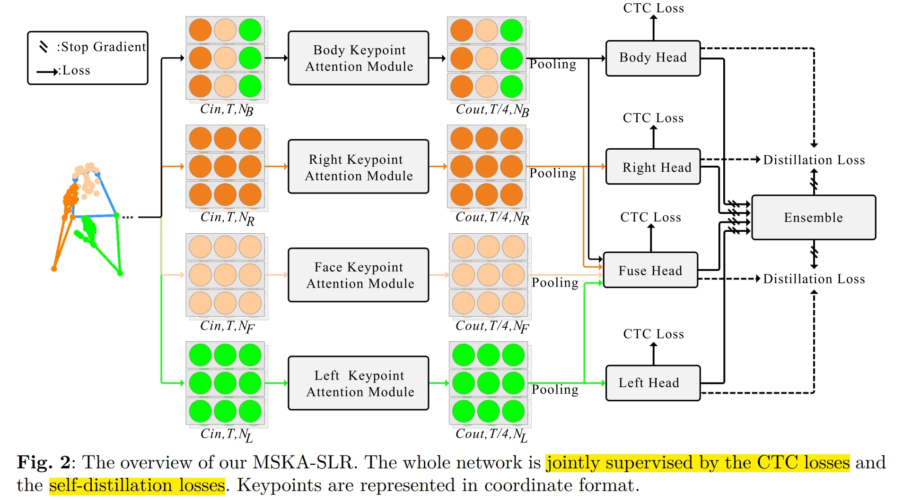

MSKA¶
I. Abstract¶
手语作为一种非语音交流方式，通过手势动作、面部表情和身体运动来传递信息与意义。当前大多数手语识别（SLR）与翻译方法依赖于RGB视频输入，这类数据易受背景环境波动的影响。采用基于关键点的策略不仅能有效降低背景变化的干扰，还可大幅减少模型的计算需求。然而，现有基于关键点的方法未能充分利用关键点序列中隐含的深层信息。为应对这一挑战，我们受人类认知机制启发——该机制通过分析手势形态与辅助要素之间的相互作用来辨识手语，提出了一个多流关键点注意力网络，用于描述由现有关键点估计器生成的关键点序列。为实现多流间的交互，我们探索了多种方法，包括关键点融合策略、头部融合及自蒸馏技术。最终构建的框架被命名为MSKA-SLR，通过简单增补翻译网络即可扩展为手语翻译（SLT）模型。我们在Phoenix-2014、Phoenix-2014T和CSL-Daily等知名基准数据集上进行了全面实验，验证了所提方法的有效性。值得注意的是，我们在Phoenix-2014T的手语翻译任务中取得了全新的最先进性能。相关代码与模型可通过以下链接获取：https://github.com/sutwangyan/MSKA。
II. Introduction¶
Our methodology is influenced by the innate human inclination to prioritize the configuration of gestures and the dynamic interconnection between the hands and other bodily elements in the process of sign language interpretation.
Three contributions:
1. 第一个提出多流关键点注意力机制 (multi-stream keypoint attention)的人，该机制完全由注意力模块构建，无需手动设计遍历规则或图拓扑结构。
2. 将关键点序列解耦为四个数据流：左手数据流、右手数据流、面部数据流和全身数据流，每个数据流都侧重于骨骼序列的特定方面。通过融合不同类型的特征，模型可以更全面地理解手语，从而实现手语识别和翻译。
3. SOTA
III. Related Work¶
AetherSign 可参考的工作
- CorrNet Hu et al (2023b) model captures crucial body movement trajectories byanalyzing correlation maps between consecutive frames. It employs 2D CNNs to extract image features, followed by a set of 1D CNNs to acquire temporal characteristics.
- In this study, our distillation process leverages the multi-stream architecture to incorporate ensemble knowledge into each individual stream, thereby improving interaction and coherence among the multiple streams.
IV. Method¶
4.1 Keypoint Augmentation¶
一般来说，keypoint coordinates are denoted with respect to the top left corner of the image, with the positive X and Y axes oriented towards the rightward and downward directions.
To utilize data augmentation, we pull the origin back to the center of the image and normalize it by a function:
with horizontal to the right and vertical upwards defining the positive directions of the X and Y axes, respectively. Within this context, the variables \(x\) and \(y\) denote the coordinates of a given point, whereas \(H\) and \(W\) symbolize the height and width of the image, respectively.
Augmentation：
- 将关键点序列的时间长度调整到区间 \([\times 0.5- \times 1.5]\) 内，并从该范围内随机选择有效帧。
- 缩放过程涉及将提供的关键点集合中每个点的坐标乘以一个缩放因子。
- 变换操作是通过将提供的平移向量应用于提供的关键点坐标集合中每个点的坐标来实现的
- 二维坐标 \(P(x, y)\) 逆时针旋转 \(\theta\) 角度后的新坐标 \(P'(x', y')\) 可以通过坐标旋转公式计算：
4.2 SLR¶
4.2.1 Keypoint decoupling¶
We divide the keypoint sequences into four sub-sequences: left hand, right hand, facial expressions and overall.
This segmentation helps the model more accurately capture the relationships between different parts, facilitating the provision of richer diversity of information

4.2.2 Keypoint attention module¶
79个关键点，包含42个手部关键点、11个覆盖肩肘腕的上半身关键点，以及部分面部关键点（10个嘴部关键点和16个其他关键点）。
具体而言，将关键点序列表示为维度为 \(C\times T\times N\) 的多维数组，其中 \(C\) 维度的元素由 \([x_{\text{nt}}, y_{\text{nt}}, c_{\text{nt}}]\) 组成： \((x_{\text{nt}}, y_{\text{nt}})\) 表示第 \(t\) 帧第 \(n\) 个关键点的坐标，\(c_{\text{nt}}\) 表示其置信度，\(T\) 表示总帧数，\(N\) 表示关键点总数。
由于各分支的注意力模块结构相似，我们以 body keypoints 注意力模块为例进行详细阐述。
完整的注意力模块结构如图3所示。

绿色矩形框中，输入数据 \(X \in R^{C×T ×N}\) 首先会与 spatial positional encodings （空间位置编码） 进行融合，随后通过两个 linear mapping functions （线性映射函数）得到 \(X \in R^{C_e×T ×N}\)（其中 \(C_e\) 通常小于 \(C_{\text{out}}\) 以降低特征冗余度和计算复杂度）。The attention map is subjected to spatial
global normalization. 需要特别说明的是，在计算注意力图谱时，我们采用Tanh激活函数而非Vaswani等人（2017）使用的softmax函数——这是因为Tanh函数的输出值域不受正数限制，既能捕捉负相关关系又具有更高的灵活性（Shi等人，2020）。最终，通过将注意力图谱与原始输入进行逐元素相乘，即可得到输出特征。
为促使模型能够共同关注来自不同表示子空间的信息，该模块采用 \(h\) heads 并行计算注意力。所有 heads 的输出经 concat 后映射至 output space 。
我们在末端添加 feedfoward layer 以生成 final output。非线性激活函数选用Leaky ReLU（Maas等人，2013）。
此外，如图3所示，该模块包含两个残差连接以稳定网络训练并整合不同特征。最后采用 2D CNN 进行时序特征提取。需要特别说明的是，不同关键点注意力模块的权重不共享。
4.2.3 Positional encoding¶
keypoint sequences 被组织成张量形式，并输入至神经网络。由于张量中的每个元素不存在预定的顺序或结构，我们需要引入位置编码机制，为每一个关节提供唯一的标识。我们采用不同频率的正弦和余弦函数作为编码函数：
其中，\(p\) 代表元素的位置，\(i\) 表示位置编码向量的维度。引入位置编码使模型能够捕捉序列中元素的位置信息。其周期性特性为不同位置提供了差异化表征，使模型能够更好地理解序列元素间的相对位置关系。单帧内的关节点按顺序进行编码，而不同帧中的同一关节点共享相同的编码值。
我们仅在空间维度引入位置编码。通过使用二维卷积提取时序特征，由于卷积操作已考虑时间连续性，因此无需额外进行时间维度编码。
4.2.4 Spatial global regularization¶
针对骨骼数据的动作检测任务，其基本概念在于利用已知信息，即人体每个关节都具有独特的物理或语义属性，且这些属性在所有时间帧和数据实例中均保持恒定与一致。利用这一已知信息，Spatial global regularization 的目标在于引导模型捕捉更广泛的注意力模式，从而使其更好地适应多样化的数据样本。该方法通过引入一个 global attention matrix 来实现，该矩阵表示为 \(N \times N\) 的形式，用于展示身体关节间的普遍关系。
该 全局注意力矩阵 在所有数据实例间共享，并在网络训练过程中与其他参数协同优化。
4.2.5 Head Network¶
图2中，最终注意力模块输出的特征经过空间池化处理，维度缩减至 \(T/4 \times 256\) 后输入 head network。head network 的核心目标是进一步捕捉时序上下文信息，其结构包含：Temporal Linear Layer, BN, ReLU，以及一个Tempoarl Convoluational Module——该模块由两个卷积核大小为3、步长为1的时序卷积层组成，后续接入 Linear Translation Layer 和另一个ReLU层。
最终生成的 gloss representation 特征维度为 \(T/4 \times 512\)。随后通过线性分类器和softmax函数提取手势语概率。我们采用连接时序分类（CTC）损失函数 \(L_{CTC}^{body}\) 对主体注意力模块进行优化。
4.2.6 Fuse Head and Ensemble¶
每个 Keypoints attention module 都拥有独特的网络头阵列。为了充分发挥我们多流架构的潜力，我们引入了一个auxiliary fuse head ，专门用于整合来自不同分支的输出。该融合头的结构设计与其它头部（如身体头部）保持一致，并同样受CTC损失函数\(L^{fuse}_{CTC}\)的约束。预测出的帧手语概率经过平均处理后，将被输入 ensemble（集成器） 以生成最终的 gloss sequence。这种集成方法通过融合多流输出结果来提升预测精度，实验结果充分验证了其有效性。
4.2.7 Self-distillation¶
采用帧级别自蒸馏技术（Chen等人，2022b），通过预测出的帧手语词概率作为伪目标。除粗粒度的CTC损失函数外，该方法还提供了细粒度的监督机制。基于多流式架构设计，我们使用四个头部网络输出的平均手语词概率作为伪目标，以此指导每个子流的学习过程。从形式化角度而言，我们致力于缩小伪目标与四个头部网络预测结果之间的KL散度。这一过程被定义为帧级别自蒸馏损失——它不仅提供针对帧的专项监督，还能将集成网络的深层认知过滤传导至每个独立子流中。
4.2.8 Loss Function¶
MSKA-SLR的整体损失由两部分组成：1) 应用于左手流(\(L^{left}_{CTC}\))、右手流(\(L^{right}_{CTC}\))、body流(\(L^{body}_{CTC}\))及融合流(\(L^{fuse}_{CTC}\))输出的CTC损失；2) 蒸馏损失(\(L_{Dist}\))。我们将识别损失公式化如下：
至此，我们已经介绍了MSKA-SLR的所有组成部分。训练完成后，MSKA-SLR能够通过融合头部网络预测手语词汇序列。
4.2.9 SLT¶
传统方法通常将手语翻译（SLT）任务视为神经机器翻译（NMT）领域的挑战，其翻译网络的输入为视觉信息。本研究延续这一思路，在提出的MSKA-SLR框架中引入具有两个隐藏层的多层感知机（MLP），继而执行翻译流程，最终实现手语翻译功能。以此构建的网络被命名为MSKA-SLT，其架构如图1(b)所示。我们选择采用Liu等人（2020）提出的mBART作为翻译网络，因其在跨语言翻译任务中表现卓越。为充分发挥我们设计的多流架构，我们在融合头（fuse head）后接入MLP和翻译网络。MLP的输入由融合头网络编码的特征（即手势表征）构成。翻译损失采用标准的序列到序列交叉熵损失函数（Vaswani等，2017）。MSKA-SLT包含如公式4所示的识别损失\(L_{SLR}\)与翻译损失\(L_T\)，其总损失函数表示为：
V. Experiments¶
5.1 Implementation Details¶
为验证方法的泛化能力，除特殊说明外，所有实验均采用统一配置。网络结构包含四个流式处理分支，每个分支由8个注意力模块组成，每个模块配备6个注意力头。输出通道数依次设置为：64、64、128、128、256、256、256和256。在手语识别（SLR）任务中，我们采用100个训练周期的余弦退火调度策略，使用权重衰减设置为1e-3的Adam优化器，初始学习率为1e-3，批处理大小设为8。参照Chen等人(2022a,b)的研究，我们采用在CC252数据集上预训练的mBART-large-cc25初始化翻译网络。推理过程中，CTC解码器和SLT解码器的束搜索宽度均设置为5。多层感知器（MLP）以1e-3的初始学习率训练40个周期，MSKA-SLR及MSKA-SLT中的翻译网络则以1e-5的初始学习率进行训练。其余超参数与MSKA-SLR设置保持一致。所有模型均在单块Nvidia 3090 GPU上完成训练。
5.2 Performance Comparison¶
在 CSL-Daily 上的 SLR：
Dev WER: 28.2%
Test WER: 27.8%